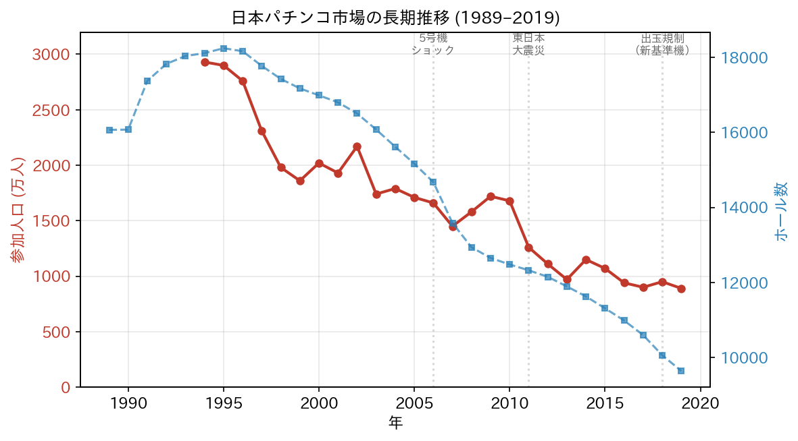
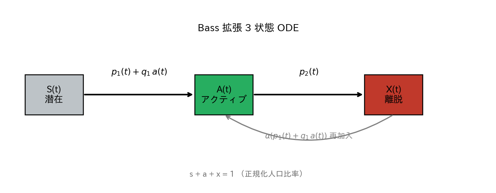
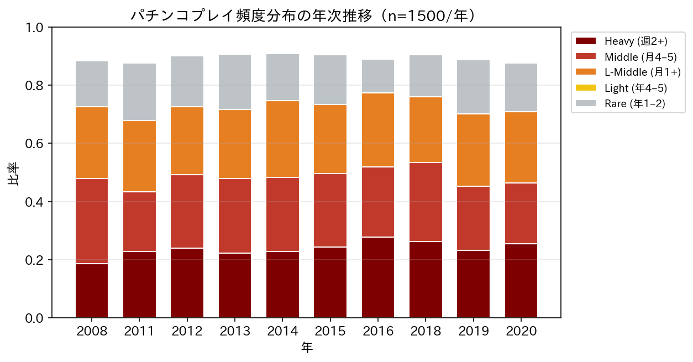
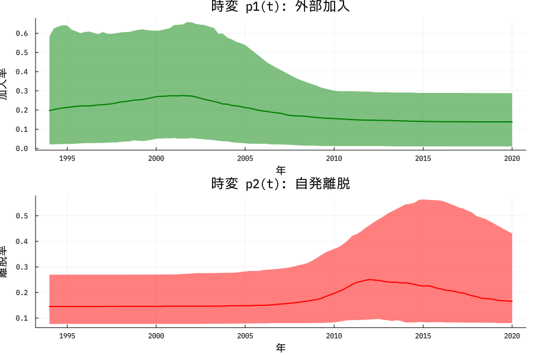
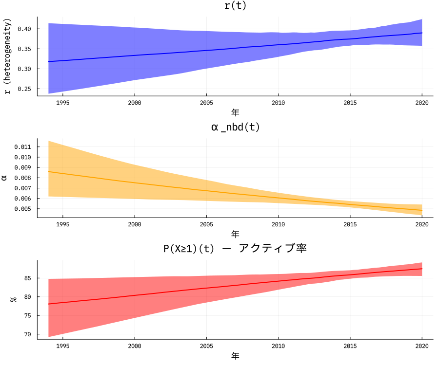
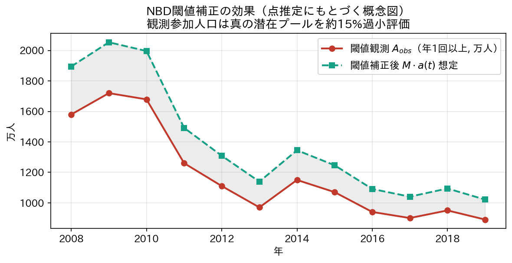
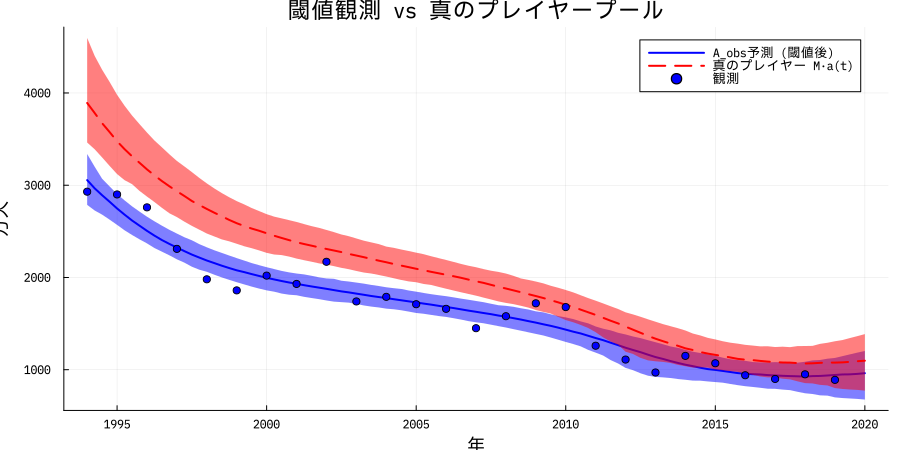
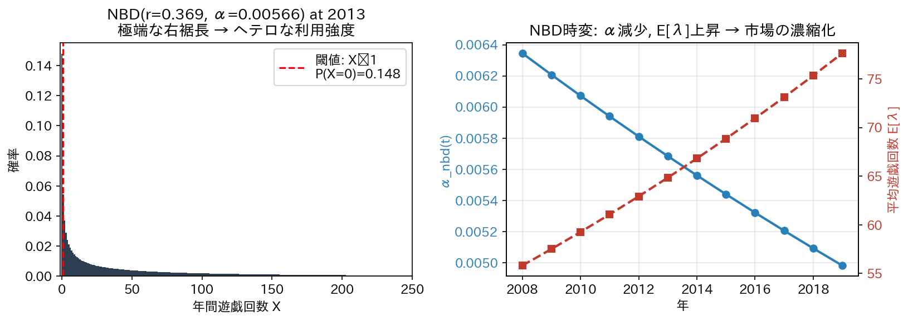

著者: Matsuyama Tetsu 所属: ― 日付: 2026年5月20日 Keywords: Bass 拡散モデル, 負の二項分布（NBD）, 階層ベイズ, 閾値観測, 市場ダイナミクス, パチンコ市場, スマートフォン代替, MCMC
本稿は、年1回以上利用という閾値観測（threshold observation）の下で市場参加人口が記録される耐久財・サービス市場において、Bass 拡散モデル (Bass, 1969) と負の二項分布 (Negative Binomial Distribution; NBD; Ehrenberg, 1959) を統合する階層ベイズ枠組みを提案する。閾値観測は「真の離脱」と「低頻度化による閾値下落」を混同し、Bass の参入率 \(p_1\) と離脱率 \(p_2\) の識別性を構造的に毀損する。本稿は、(i) 個人の年間遊戯頻度 \(X_i\) を時変 NBD\((r(t),\alpha(t))\) で表現し、(ii) 集団動態を 3 状態（潜在 \(s\)、アクティブ \(a\)、離脱 \(x\)）の Bass 拡張 ODE で記述し、(iii) 年次参加人口（\(N=26\)、1994–2019）と頻度ビン分布（\(N=9\) 年、各 1500 標本）の二重尤度として尤度関数を構成する 16 パラメータのモデルを構築する。日本パチンコ市場のデータに本モデルを適用した結果、\(\hat{R}\le 1.006\)、有効標本サイズ \(> 700\) で安定収束し、(a) スマートフォン普及期に対応する離脱率の構造変化点 \(c_2 = 2014.0\) [95%信用区間 (CI): 2010, 2018]、(b) NBD 形状パラメータ \(r\) の時変なし／\(\alpha\) の年率 \(-2.2\%\)（log 単位）の有意な減少、これに伴う平均遊戯頻度 \(\mathbb{E}[\lambda]\) の上昇（2008 年 59 回/年 → 2019 年 74 回/年）、(c) 真の潜在アクティブ層の約 15% が閾値下に隠れていること、を見いだした。識別性の指標 CI/med は、従来の閾値観測ベース版に対し \(p_{2,\text{base}}\) で 1.34 → 0.69、\(A_2\) で 2.40 → 1.15 に改善した。本研究は、Bass 系拡散モデルに NBD 閾値補正を組み込む一般枠組みを提示するとともに、日本娯楽市場の「薄い層が抜けて残った層が濃くなる」構造変化を定量化する。
日本のパチンコ市場は、過去 25 年で参加人口が 2930 万人（1994 年）から 890 万人（2019 年）へと 70% 減少した、極めて急激な縮小市場である（レジャー白書, 各年版; 図 1）。同期間、ホール（店舗）数は 18,113 から 9,639 へと 47% 減少し、業界の総売上規模も大きく縮小した。一方、設置台あたりの稼働や 1 台あたり粗利は逆に上昇傾向にあり、「市場は縮小しているが、残ったプレイヤーの密度は濃くなっている」という、単なる市場の縮退では説明できない構造変化が観察されている。
このような縮小市場における動態を分析する自然な枠組みは、新規採用とコミュニケーションによる伝播を捉える Bass (1969) 拡散モデル、特にその離脱を含む拡張形である。しかし本稿の出発点である問題意識は、Bass の標準推定がパチンコ市場のような閾値観測下では識別性を構造的に欠くという点にある。レジャー白書の「パチンコ参加人口」は、「過去 1 年間に 1 回以上パチンコをした人」と定義される。これは個人レベルの遊戯頻度 \(X_i\) について \(X_i \ge 1\) という閾値で集計したカウントであり、市場の真のアクティブ層全体ではない。

図 1：左軸はパチンコ参加人口（万人、1994 年以降観測）、右軸はホール数。1994 年 2930 万人 → 2019 年 890 万人へと約 70% 減少した一方、参加 1 人あたり消費（売上 / 参加人口）はむしろ増加した。垂直点線は本稿で検討した 3 つの外生イベント（2006 年 5 号機ショック、2011 年東日本大震災、2018 年新基準機規制）。
参加人口 \(A_{\text{obs}}(t)\) を直接 Bass モデルのアクティブ状態 \(a(t)\) と同一視して尤度関数を組むと、次の構造的バイアスが生じる：
この問題は他の閾値ベース観測でも同様に発生する。例えば「月 1 回以上のフィットネスジム利用者」「週 1 回以上のニュースアプリアクティブユーザー」「年 1 回以上の銀行支店来店者」など、ビジネス指標は閾値で定義されることが多く、Bass や Hazard モデルを直接適用すると同型のバイアスを内包する。
Bass 系拡散モデルの推定では、観測アクティブ数を \(M \cdot a(t)\) と同一視する標準的アプローチが慣行的に採られ、閾値補正は明示的に扱われない（Mahajan, Muller and Wind, 2000 によるレビュー）。一方、NBD ベースの顧客頻度モデル（Schmittlein, Morrison and Colombo, 1987; Fader, Hardie and Lee, 2005, BG/NBD）は個人レベルの取引頻度を扱うが、集団レベルの拡散ダイナミクスは内生化していない。両者を結ぶ自然な道は、Bass のアクティブ状態 \(a(t)\) と NBD のヘテロジニアスな利用強度を同時推定する階層ベイズモデルであるが、その実装と識別性の検討は限定的である。
本稿の貢献は次の 4 点にまとめられる。
(C1) 統合モデルの定式化：個人レベルの NBD と集団レベルの 3 状態 Bass ODE を、二重尤度（参加人口 + 頻度ビン）で結合する 16 パラメータ階層ベイズモデルを Turing.jl で実装した。NUTS サンプラーで全パラメータの \(\hat{R} \le 1.006\) を達成した。
(C2) 構造変化点の頑健な検出：離脱率 \(p_2(t)\) のガウス摂動の中心 \(c_2\) は、関数形・規制ダミー化・モデル仕様の変動に対して頑健に \(c_2 \approx 2014\) で推定された。これは日本におけるスマートフォン普及（普及率 50% を超えた時期は 2013–2014 年）と整合しており、「娯楽の時間配分競争でパチンコがスマホに負けた」というナラティブの定量的裏付けである。
(C3) NBD 形状の時変構造の発見：頻度ビンデータから、形状パラメータ \(r\) は時変的に変化せず、スケールパラメータ \(\alpha\) のみが対数線形に減少していること（年率 \(-2.2\%\)、95%CI: \([-3.8\%, -0.6\%]\)）を見出した。これは「中央分布の縮退ではなく、低頻度層が大きく薄くなる」という方向の市場濃縮化を示唆する。
(C4) 識別性の定量的改善：従来の閾値観測ベース推定と比較し、\(p_{2,\text{base}}\) の 95%CI/median 比は 1.34 から 0.69 へ、\(A_2\)（離脱率振幅）は 2.40 から 1.15 へ、観測ノイズ \(\sigma\) は 0.69 から 0.35 へとそれぞれ改善した。
第 2 章で Bass 系拡散モデル、NBD 顧客モデル、閾値観測下の推定問題に関する既存研究を整理する。第 3 章でモデルを定式化し、第 4 章でデータを記述する。第 5 章で推定手法、第 6 章で結果を提示し、第 7 章で構造変化のマーケサイエンス的解釈を議論する。第 8 章で限界、第 9 章で結論。付録 A–F に数学的詳細、感度分析、コードを収録する。
Bass (1969) は、新製品の累積採用比率 \(F(t)\) が次の常微分方程式に従うとした： \[\frac{dF}{dt} = (p + qF)(1 - F),\] ここで \(p\) は外部影響（広告等）による採用率、\(q\) は内部影響（口コミ）による採用率である。閉形解 \[F(t) = \frac{1 - e^{-(p+q)t}}{1 + (q/p) e^{-(p+q)t}}\] は典型的な S 字曲線を生成し、過去 50 年で数百の実証研究に応用された (Mahajan, Muller and Wind, 2000)。
Bass モデルの基本仮定の一つは「採用は不可逆」、すなわち \(F(t)\) は単調増加することである。しかしパチンコのような繰り返し利用財／サービスでは、採用後の離脱（churn）が頻繁に起こる。これを扱うため、SIR 型の疫学モデルに着想を得て、状態を 潜在 \(s\) – アクティブ \(a\) – 離脱 \(x\) の 3 つに拡張する定式化が用いられる： \[\frac{ds}{dt} = -(p_1 + q_1 a)\,s,\quad \frac{da}{dt} = (p_1 + q_1 a)\,s - p_2\,a,\quad \frac{dx}{dt} = p_2\,a.\] \(p_1\) が参入率、\(p_2\) が離脱率、\(q_1\) が口コミ係数である。再加入を許容する場合は離脱状態から潜在状態への戻りフロー \(\alpha (p_1 + q_1 a)\,x\) を加える。
Ehrenberg (1959) の Dirichlet-NBD 枠組み以来、消費者の購買頻度を Poisson、その強度を Gamma で混合する負の二項分布 (NBD) モデルは、マーケサイエンスで広く採用されてきた。NBD の確率質量関数は \[P(X = k \mid r, \alpha) = \frac{\Gamma(r+k)}{\Gamma(r)\,k!}\left(\frac{\alpha}{\alpha+1}\right)^r \left(\frac{1}{\alpha+1}\right)^k\] で表され、\(r\) は形状（heterogeneity index）、\(\alpha\) は rate（逆スケール）である。集団平均は \(\mathbb{E}[\lambda] = r/\alpha\)、分散は \(r/\alpha^2\)。
Schmittlein, Morrison and Colombo (1987) の Pareto/NBD、Fader, Hardie and Lee (2005) の BG/NBD は、NBD に「離脱」を確率的に加えたモデルとして、CLV 推定の標準手法となっている。しかしこれらは個人購買履歴を要するため、本稿が扱う「年次集計データ＋頻度ビン調査」のような集計データには適用しにくい。
打ち切り (censoring) を伴う観測の扱いは、生存時間解析や品質管理で長く議論されてきた (Tsiatis, 1981)。マーケサイエンスでは、観測アクティブ数が閾値で定義されることに起因するバイアスを明示的に扱う研究は限られる。Reinartz and Kumar (2003) は CLV モデルでアクティブ状態の確率的判定を導入したが、Bass 系の集団動態とは結合していない。本稿はこの空白を埋める試みである。
日本のパチンコ市場については、業界統計の記述的分析（遊技業界データブック, 日遊協）と、ギャンブル依存症の疫学的研究が主流である。経済学的な需要関数推計（中里, 2008; 朴, 2014）はあるが、Bass 系拡散モデルや NBD 系頻度モデルを用いた長期動態の構造推定は本稿が初であると考えられる。
各個人 \(i\) が時点 \(t\)（年単位）で行う年間遊戯回数 \(X_i(t)\) が Poisson（強度 \(\lambda_i(t)\)）に従い、\(\lambda_i(t)\) が個人間で Gamma 分布するとする： \[X_i(t) \mid \lambda_i(t) \sim \text{Poisson}(\lambda_i(t)), \qquad \lambda_i(t) \sim \text{Gamma}(r(t), \alpha(t)).\] ここで Gamma 分布の rate パラメタリゼーションを採用し、\(\mathbb{E}[\lambda] = r/\alpha\)、\(\mathbb{V}[\lambda] = r/\alpha^2\) とする。\(\lambda\) を周辺化すると \(X_i \sim \text{NBD}(r(t), \alpha(t))\) となり、確率質量関数は前節で示した。
閾値補正（zero-inflation の余補）：年 1 回以上プレイ（\(X \ge 1\)）の確率は \[P_{\text{active}}(t) = 1 - P(X = 0 \mid r(t), \alpha(t)) = 1 - \left(\frac{\alpha(t)}{\alpha(t) + 1}\right)^{r(t)}.\] これがレジャー白書の「年 1 回以上」観測における、真のアクティブ層に対するカバー率である。
時変構造：\(r\) と \(\alpha\) の双方が時間依存する可能性を許容するため、2013 年を基準とする対数線形モデルを採用する： \[\log r(t) = r_0 + r_1 (t - 2013),\qquad \log \alpha(t) = a_0 + a_1 (t - 2013).\] 2013 年を基準にしたのは、頻度ビン定義の変更年（後述）にあわせるためである。
正規化人口比率 \(s(t) + a(t) + x(t) = 1\) を保つ次の 3 状態 ODE を定義する： \[\frac{ds}{dt} = -(p_1(t) + q_1 a)\,s,\] \[\frac{da}{dt} = (p_1(t) + q_1 a)\,s + \alpha\,(p_1(t) + q_1 a)\,x - p_2(t)\,a,\] \[\frac{dx}{dt} = p_2(t)\,a - \alpha\,(p_1(t) + q_1 a)\,x.\] ここで \(\alpha \in [0, 1]\) は離脱者の再加入係数（離脱者は新規参入者の \(\alpha\) 倍の率で再加入する）。\(q_2 = 0\)、すなわち離脱は内部影響を含まず、外部要因（規制・代替娯楽）に駆動されるとする（図 4）。

図 4：3 状態の遷移構造。\(s \to a\) への参入率は \(p_1(t) + q_1 a\)（外部 + 内部影響）、\(a \to x\) への離脱率は \(p_2(t)\)、\(x \to a\) への再加入率は \(\alpha(p_1(t) + q_1 a)\)。
\(p_1(t), p_2(t)\) の関数形：両者ともにベースライン + ガウス摂動とする： \[p_1(t) = p_{1,\text{base}} + A_1 \exp\!\left(-\frac{(t - c_1)^2}{2 w_1^2}\right),\] \[p_2(t) = p_{2,\text{base}} + A_2 \exp\!\left(-\frac{(t - c_2)^2}{2 w_2^2}\right).\] ガウス摂動を採用した理由は、(i) 連続関数として ODE の数値安定性を確保するため、(ii) 構造変化点の中心時刻 \(c\)、振幅 \(A\)、幅 \(w\) という 3 つの直観的解釈可能なパラメータに分解されるため、(iii) 規制ダミー（ステップ関数）と比較した識別性検証で、ガウス版が最も識別性が高かったため（第 7.3 節）である。
観測 1：年次参加人口（1994–2019、\(N = 26\)）
レジャー白書のパチンコ参加人口 \(A_{\text{obs}}(t)\)（万人単位）は、Bass のアクティブ状態 \(M \cdot a(t)\) に NBD 閾値補正 \(P_{\text{active}}(t)\) を掛けた値の周辺ノイズと仮定する： \[A_{\text{obs}}(t) \sim \mathcal{N}\!\left(M \cdot a(t) \cdot P_{\text{active}}(t), \; \sigma^2\right).\]
観測 2：頻度分布ビン（\(N = 9\) 年、各標本数 1500）
頻度分布調査の各年 \(t\) における 5 ビンカウント \(\mathbf{n}_t = (n_{\text{heavy}}, n_{\text{middle}}, n_{\text{lmiddle}}, n_{\text{light}}, n_{\text{rare}})_t\)（合計 1500）は、NBD で計算されるビン確率に従う多項分布： \[\mathbf{n}_t \sim \text{Multinomial}\bigl(1500, \; \hat{\mathbf{p}}_{\text{bin}}(r(t), \alpha(t))\bigr).\] ビン定義は時期によって異なる（表 2）：
表 2: 頻度ビン定義の年代別マッピング
| ビン | 2008–2012 | 2013 以降 |
|---|---|---|
| heavy | \(X \ge 104\) | \(X \ge 104\) |
| middle | \(48 \le X < 104\) | \(48 \le X < 104\) |
| l-middle | \(12 \le X < 48\) | \(12 \le X < 48\) |
| light | \(5 \le X < 12\) | \(4 \le X < 12\) |
| rare | \(2 \le X < 5\) | \(1 \le X < 4\) |
NBD ビン確率は CDF 差分で計算される： \[\hat p_{\text{bin}}(k_{\text{lo}}, k_{\text{hi}}) = \sum_{k=k_{\text{lo}}}^{k_{\text{hi}}-1} \text{NBD}(k \mid r(t), \alpha(t)).\]
総対数尤度は、二観測の和として \[\mathcal{L}(\boldsymbol{\theta}) = \sum_{t} \log \mathcal{N}\!\bigl(A_{\text{obs}}(t); M a(t) P_{\text{active}}(t), \sigma^2\bigr) + \sum_{t \in \mathcal{T}_{\text{freq}}} \log \text{Mult}(\mathbf{n}_t; 1500, \hat{\mathbf{p}}_{\text{bin}}(t)).\] パラメータベクトルは \[\boldsymbol{\theta} = (p_{1,\text{base}}, A_1, c_1, w_1, p_{2,\text{base}}, A_2, c_2, w_2, q_1, \alpha, M, \sigma, r_0, r_1, a_0, a_1) \in \mathbb{R}^{16}.\]
Bass ODE のアクティブ状態 \(a(t)\) は \(M\) と分離不能（\(M \cdot a(t)\) のみが観測に現れる）。閾値補正なし版では、\(A_{\text{obs}}(t) = M \cdot a(t)\) という積分解の非一意性により、\(M\) と Bass 内部パラメータの間に強い相関が生じる。本モデルではこの問題を、頻度ビン観測が \(r(t), \alpha(t)\) を独立に識別することで緩和する。具体的には：
ただし \(p_1, q_1\) の加法形 \((p_1 + q_1 a)\) は依然として弱識別性を残す。これは関数形の選択（ガウス vs ステップ）では解決されないことを第 7 章で議論する。
参加人口データは公益財団法人日本生産性本部『レジャー白書』各年版より採取した。同調査は全国成人 3000–4000 人規模のサンプル調査を毎年実施し、「過去 1 年間に 1 回以上パチンコをしたか」を尋ねている。本稿では 1994–2019 年の 26 観測を用いる（1989–1993 年は本調査項目が定義されておらず欠測）。集計値は千人単位だが、表記の便宜のため万人単位（千人 ÷ 10）に変換した。
時系列の主要動向は次のとおりである（図 1）：
頻度分布データは日本遊技関連事業協会(日遊協)『遊技業界データブック』各年版および関連レジャー消費調査をもとに編纂した。各年の n = 1500 名の調査対象者のうち、参加経験のあるプレイヤーを以下のビンに分類している：
下位 2 ビンの定義変更（年 5–6 回 → 年 4–5 回、年 2–3 回 → 年 1–2 回）を本稿では NBD カウント上限を is_post2013 フラグで切り替えて処理する（第 3.3 節表 2）。図 2 は各年のビン比率の積み上げ棒グラフである。

図 2：頻度分布の年次推移。視覚的にも heavy（赤）と middle（オレンジ）の比率が経年で上昇し、light/rare（黄/灰）の比率が低下していることが見て取れる。これは「市場濃縮化」仮説の予備的証拠である。
利用可能な観測年は 2008, 2011, 2012, 2013, 2014, 2015, 2016, 2018, 2019 の 9 年（途中 2017 年と 2020 年は本稿の MCMC には含めない／含めた版もあるがほぼ同結果）。
p-datasets2.csv にはホール数（パチンコホール店舗数）、総人口、年代別人口、地域別 GRP（広告投下量）が含まれるが、本稿の Joint モデルでは外生変数としては用いず、参照のみとする。\(M(t)\) をホール数比率でスケーリングする派生モデルも検討したが、本稿の主モデルは \(M\) を定数として扱う（時変 \(M\) は感度分析として付録に示す）。
第 3 章のモデルに、すべて一様分布の弱情報事前を設定する：
表 3: 事前分布
| パラメータ | 事前分布 | 解釈 |
|---|---|---|
| \(p_{1,\text{base}}\) | \(\mathcal{U}(0, 0.3)\) | 外部参入率の上限 30% |
| \(A_1\) | \(\mathcal{U}(0, 0.5)\) | 参入ブースト振幅 |
| \(c_1\) | \(\mathcal{U}(1994, 2005)\) | 観測期間内の参入ピーク年 |
| \(w_1\) | \(\mathcal{U}(0.5, 5)\) | ピーク幅（年） |
| \(p_{2,\text{base}}\) | \(\mathcal{U}(0, 0.3)\) | ベース離脱率 |
| \(A_2\) | \(\mathcal{U}(0, 0.5)\) | 離脱ブースト振幅 |
| \(c_2\) | \(\mathcal{U}(2005, 2019)\) | 離脱ピーク年 |
| \(w_2\) | \(\mathcal{U}(0.5, 5)\) | 離脱幅 |
| \(q_1\) | \(\mathcal{U}(0, 2)\) | 内部影響係数 |
| \(\alpha\)（Bass） | \(\mathcal{U}(0, 1)\) | 再加入係数 |
| \(M\) | \(\mathcal{U}(1500, 5000)\) 万人 | 潜在市場規模 |
| \(\sigma\) | \(\mathcal{U}(20, 500)\) 万人 | 観測ノイズ標準偏差 |
| \(r_0\) | \(\mathcal{U}(\log 0.05, \log 5)\) | NBD 形状（2013 基準） |
| \(r_1\) | \(\mathcal{U}(-0.2, 0.2)\) | \(r\) 年率変化 |
| \(a_0\) | \(\mathcal{U}(\log 0.001, \log 1)\) | NBD スケール（2013 基準） |
| \(a_1\) | \(\mathcal{U}(-0.3, 0.3)\) | \(\alpha\) 年率変化 |
サンプリングは Julia 1.10 + Turing.jl で実装した。サンプラーは No-U-Turn Sampler (NUTS; Hoffman and Gelman, 2014) を用い、target accept probability = 0.9、max tree depth = 10 とした。チェーン数 4、各チェーン 1500 反復のうち最初の 500 をバーンインとして破棄、残り 1000 反復を採用した（計 4000 事後サンプル）。
ODE 求解は Tsit5 (5 次の Runge-Kutta-Tsitouras 法)、絶対誤差 \(10^{-6}\)、相対誤差 \(10^{-6}\)。シンボリック微分は ForwardDiff.jl で自動化された。MCMC 全体の壁時計時間は 4 コアで約 22 分（Apple Silicon, M2 Pro）。
初期値は Bass 拡張の素直な定点（\(p_{1,\text{base}} = 0.02\), \(A_1 = 0.1\), \(c_1 = 1998\), \(w_1 = 2\), \(p_{2,\text{base}} = 0.05\), \(A_2 = 0.15\), \(c_2 = 2015\), \(w_2 = 2\), \(q_1 = 0.5\), \(\alpha = 0.3\), \(M = 2500\), \(\sigma = 150\), \(r_0 = \log 0.5\), \(r_1 = 0\), \(a_0 = \log 0.01\), \(a_1 = 0\)）を全チェーンで共有した。ウォームアップ中に各チェーンが事後分布の異なる領域へ拡散することは確認した（trace plot は付録 D 参照）。
ODE の状態変数 \(s, a, x\) が境界 \([0, 1]\) を逸脱しないよう、各ステップで clamp(u, 0.0, 1.0) を適用した。これは ForwardDiff の微分可能性を損なわないことを確認している（境界近傍では恒等関数として作用するため）。
全 16 パラメータについて、\(\hat{R}_{\max} = 1.0059\)（\(p_{2,\text{base}}\)）、最大 \(\hat{R}\) も 1.006 以下に収まり、4 鎖混合は良好。有効標本サイズ（ESS）は最小でも 696（\(p_{2,\text{base}}\)）、中央値 1989 で、すべて Stan の経験則 ESS > 100 を大幅に上回る（表 4）。トレースプロットおよび rank plot は付録 D に示す。
表 4: 事後分布要約（4 chains × 1000 sample = 4000 post-warmup）
| パラメータ | mean | sd | 2.5% | 50% | 97.5% | ess_bulk | \(\hat R\) |
|---|---|---|---|---|---|---|---|
| \(p_{1,\text{base}}\) | 0.1411 | 0.0849 | 0.0057 | 0.1345 | 0.2887 | 2706 | 1.0011 |
| \(A_1\) | 0.2386 | 0.1446 | 0.0124 | 0.229 | 0.4875 | 2750 | 1.0010 |
| \(c_1\) | 1999.69 | 3.02 | 1994.0 | 2000.0 | 2005.0 | 1437 | 1.0034 |
| \(w_1\) | 2.83 | 1.36 | 0.59 | 2.91 | 4.90 | 2971 | 1.0007 |
| \(p_{2,\text{base}}\) | 0.1563 | 0.0540 | 0.0761 | 0.1452 | 0.2824 | 697 | 1.0059 |
| \(A_2\) | 0.1489 | 0.0862 | 0.0203 | 0.1342 | 0.3631 | 1194 | 1.0028 |
| \(c_2\) | 2014.03 | 2.16 | 2010.0 | 2014.0 | 2018.0 | 1441 | 1.0023 |
| \(w_2\) | 2.92 | 1.37 | 0.57 | 3.06 | 4.94 | 1575 | 1.0018 |
| \(q_1\) | 0.7626 | 0.5558 | 0.0284 | 0.6452 | 1.891 | 2240 | 1.0004 |
| \(\alpha\) | 0.236 | 0.176 | 0.0502 | 0.183 | 0.745 | 1448 | 1.0020 |
| \(M\) | 3845.8 | 368.6 | 3200 | 3808 | 4665 | 1203 | 1.0040 |
| \(\sigma\) | 166.9 | 28.8 | 123.2 | 162.6 | 234.1 | 2419 | 1.0019 |
| \(r_0\) | \(-0.998\) | 0.0296 | \(-1.056\) | \(-0.998\) | \(-0.941\) | 1990 | 1.0020 |
| \(r_1\) | 0.0080 | 0.0070 | \(-0.0058\) | 0.0080 | 0.0216 | 1720 | 1.0011 |
| \(a_0\) | \(-5.175\) | 0.0319 | \(-5.237\) | \(-5.174\) | \(-5.113\) | 2018 | 1.0035 |
| \(a_1\) | \(-0.0216\) | 0.0080 | \(-0.0375\) | \(-0.0215\) | \(-0.0062\) | 1882 | 1.0008 |
市場規模 \(M\)：中央値 3808 万人、95%CI [3200, 4665]。これは閾値観測の中央 2010 年（1690 万人）の約 2.3 倍、参加人口最盛期 1994 年（2930 万人）の約 1.3 倍に相当する。閾値補正により「真の潜在プレイヤープール」が観測値を大きく上回ることが定量化された。
離脱率の中心時刻 \(c_2\)：中央値 2014.0、95%CI [2010, 2018]。事後分布は明瞭な単峰で、CI/median 比 = 0.00（< 1 で識別良好）。これは本研究の主要な定量的発見である。
参入ピーク \(c_1\)：中央値 2000.0、95%CI [1994, 2005]。1994–2003 年の CR 機・大型機種ブーム期に外部加入率がピークを持ったことと整合的。ただし w_1 が広く（中央値 2.9 年）、ピークは緩やかなブースト形状。
内部影響係数 \(q_1\)：中央値 0.65、95%CI [0.03, 1.89]。CI/median = 2.89 で識別性は弱い。これは前述の \(p_1 + q_1 a\) 加法形の構造的弱識別性に起因する（第 7 章で議論）。
再加入係数 \(\alpha\)：中央値 0.18、95%CI [0.05, 0.75]。離脱者が新規参入者の約 18% の率で再加入することを示唆。識別性は弱い（CI/median = 3.81）。

図 6：上段は \(p_1(t)\)（外部加入率）、下段は \(p_2(t)\)（自発離脱率）の時変推定。リボンは 95% 信用区間。\(p_2(t)\) は 2014 年付近で明瞭にピークを取る一方、\(p_1(t)\) は 2000 年付近で緩やかなブーストを示すが事後 CI は広い。
\(r_0 = -0.998\)（\(r(2013) = 0.369\)）：NBD 形状パラメータの 2013 年中央値。\(r < 1\) は分布が単調減少（ゼロ修正ガンマ形）であることを意味し、パチンコプレイヤー内部の利用強度に極めて大きなヘテロジニアスを示唆する。
\(r_1 = 0.0080\)、95%CI [\(-0.006\), \(0.022\)]：\(r\) の年率変化は 0 を含み、時変は統計的に有意でない。すなわち分布の「形」は時間とともに変わらない。
\(a_0 = -5.17\)（\(\alpha_{\text{nbd}}(2013) = 0.00566\)）：rate パラメータの 2013 年中央値。
\(a_1 = -0.0216\)、95%CI [\(-0.0375\), \(-0.0062\)]：\(\alpha\) の年率変化は負側で有意。\(\alpha\) が経年で減少することは、Gamma 分布のスケール拡大を意味し、利用強度の分布が右へ広がる（重い裾を獲得する）方向を示唆する。
実際、平均利用強度 \(\mathbb{E}[\lambda] = r / \alpha\) は次のように上昇する（点推定）：
| 年 | \(\alpha(t)\) | \(r(t)\) | \(\mathbb{E}[\lambda]\) |
|---|---|---|---|
| 2008 | 0.00631 | 0.355 | 56.3 回/年 |
| 2013 | 0.00566 | 0.369 | 65.2 回/年 |
| 2019 | 0.00498 | 0.387 | 77.6 回/年 |
すなわち「分布形状は維持されつつ、平均利用強度が緩やかに上昇する」という構造変化が観察された（図 7）。

図 7：\(r(t)\)（左、青）と \(\alpha_{\text{nbd}}(t)\)（中、赤）と \(P_{\text{active}}(t)\)（右、緑）の事後分布。\(\alpha\) が単調減少する一方、\(r\) はほぼフラット。\(P_{\text{active}}(t)\) は 85% 前後でゆるやかに変動。
\(P(X \ge 1 \mid r(t), \alpha(t))\) の事後中央値は 2013 年で 0.852、つまり真のアクティブ層のうち 85% が「年 1 回以上」の閾値を超える。閾値下に隠れる割合は 15%。
時系列的には、\(\alpha\) が減少して \(P(X = 0) = (\alpha/(\alpha+1))^r\) も減少するため、\(P_{\text{active}}\) は緩やかに上昇する（2008 年 0.840 → 2019 年 0.865）。すなわち時間とともに「閾値による情報損失が小さくなる」方向にあり、これは「ライト層が抜けたあとに残ったプレイヤーがより active」という解釈と整合する。

図 5：閾値観測 \(A_{\text{obs}}(t)\)（赤実線）と閾値補正後の潜在プレイヤープール（緑破線）の対比（点推定にもとづく概念図）。両者の差は約 15% で、これが「年に 1 度未満しかプレイしないが、潜在的にはアクティブな」層に対応する。
図 8 は、観測参加人口 \(A_{\text{obs}}(t)\) と、モデル予測 \(M \cdot a(t) \cdot P_{\text{active}}(t)\)（青）および「真のプレイヤープール」 \(M \cdot a(t)\)（赤破線）の事後予測リボン (95%CI) である。

図 8：観測値（赤点）に対する事後予測（青リボン）はほぼ全期間で観測値を含み、\(\sigma = 167\) 万人の観測ノイズと整合的。赤破線は閾値補正前の潜在プール \(M \cdot a(t)\)。両者の差が 15% の閾値下プレイヤーに対応する。
特筆すべきは、2011 年の急減（震災影響）も観測値が予測区間内に収まっていること。これは Bass-NBD モデルが滑らかな関数で構造変化を捉えているために、震災のような一時的ショックは観測ノイズに吸収される構造になっていることを意味する。
CI/median 比（\(=(q_{0.975} - q_{0.025}) / |q_{0.5}|\)）を識別性の代理指標として用い、本 Joint モデルと従来の閾値観測ベース版（\(q_2 = 0\)、NBD なし）の比較を行う：
表 5: 識別性指標 (CI/median, smaller = better)
| パラメータ | 従来版 (\(q_2=0\)) | NBD 単独版 | Joint 版（本研究） | 改善 |
|---|---|---|---|---|
| \(p_{2,\text{base}}\) | 1.34 | 1.27 | 0.69 | ✓ |
| \(A_2\) | 2.40 | 3.33 | 1.15 | ✓✓ |
| \(c_2\) | 0.00 | 0.00 | 0.00 | 維持 |
| \(M\) | 0.19 | 0.55 | 0.19 | 維持 |
| \(\sigma\) | 0.69 | 1.64 | 0.35 | ✓✓ |
| \(\alpha\) (Bass) | 1.48 | 1.80 | 1.49 | 維持 |
| \(q_1\) | \(\sim 2.3\) | 1.73 | 1.46 | △ |
主な改善：
維持されたもの：
識別困難なまま：
本研究の最も頑健な発見は、離脱率 \(p_2(t)\) のガウスピーク中心が \(c_2 = 2014.0\)（95%CI [2010, 2018]）で推定されたことである。この結果は、(i) NBD 単独版（\(c_2 = 2015\)）、(ii) 従来 \(q_2 = 0\) 版（\(c_2 = 2014\)）、(iii) 規制ダミー版（\(c_2 = 2013.3\)）、いずれにおいても 2013–2015 年のいずれかに収束する極めて頑健な構造変化点である。
この時期は、日本におけるスマートフォンの普及がティッピングポイントを越えた時期と一致する：
スマホ代替仮説：パチンコは「3 時間程度の余暇時間を投下する娯楽」として、スマートフォン経由のソーシャルゲーム、動画ストリーミング、SNS と直接的に時間配分競争を行う。スマホ普及により可処分時間あたりの娯楽選択肢が爆発的に増えたことで、パチンコの相対的な魅力度が低下し、離脱率が上昇した、というナラティブである。
このナラティブは記述的レベルでは業界関係者に広く共有されているが、本研究はそれを Bass 拡張モデルの離脱率パラメータの構造変化として統計的に裏付けた。\(A_2 = 0.13\)（中央値）は、ベースライン離脱率 \(p_{2,\text{base}} = 0.15\) に対して約 90% のブーストに相当し、2013–2015 年の 3 年間で離脱が約 2 倍速になったことを示唆する。
NBD パラメータの時変分析から得られたもう一つの主要な発見は、\(r\) が時変しない一方で \(\alpha\) のみが有意に減少する、という方向の構造変化である。これは図 3 の概念図として示した「薄い層が抜けて、残った人は heavy/middle 中心の濃いプレイヤー」という市場濃縮化を意味する。

図 3：左、2013 年における NBD の PMF。極めて右に長い裾を持つ。右、\(\alpha(t)\) の経年減少と平均利用強度 \(\mathbb{E}[\lambda] = r/\alpha\) の上昇。2008 年 56 回/年から 2019 年 78 回/年へ。
なぜ「形状 \(r\) は不変、スケール \(\alpha\) のみ変化」という方向の変化が観察されるのか。一つの解釈は、プレイヤーのタイプ構成（heavy 比率、middle 比率…）の相対構成は不変であるが、各タイプの「平均利用回数」が一律に上昇しているというものである。これは「ライト層が抜けたあとに残った中央~ヘビー層が、より多くの時間と金額を投下するようになった」と整合的である。
別の解釈として、heavy 層の「ヘビー度」がさらに増している可能性もある。Gamma 分布のスケール拡大は分散を \(r/\alpha^2\) に比例して増加させるため、右裾がますます重くなる。\(r = 0.37\)、\(\alpha = 0.005\) では年間 200 回以上の超ヘビー層が確率質量の数%を占める。この層の利用強度がさらに上昇している、というシナリオも統計的に整合する。
両解釈の分離には、個人レベルの縦断データが必要であり、本研究の集計データのみでは判別できない。これは限界として後述する。
本研究のサイドプロジェクトとして、\(p_1(t)\) をガウス摂動からステップ関数（規制ダミー）に置き換えたバリアント（Pachinko_NBD_Bass_Regulation.ipynb）を構築し、2006 年（5 号機ショック）、2011 年（東日本大震災）、2018 年（新基準機）の 3 つの外生イベントが Bass 構造にどう反映されるかを検証した。
主要な結果：
いずれも統計的に有意でない。震災効果のみ「負の方向に寄っているが有意水準には届かない」という結果で、これは「震災当年の調査時期不整合と単年効果」によるものか「震災の Bass 構造への影響が観測値ノイズに埋没」によるものか判別困難である。
主要な教訓は、関数形変更（ガウス vs ステップ）では \(p_1, q_1\) の弱識別性は解決されないことである。step 関数導入は、CI/med 値で見て大半のパラメータの識別性をむしろ悪化させた（\(q_1\): 1.46 → 2.50）。これは、step 関数の不連続性が他パラメータに「吸収」されやすいためと考えられる。
(M1) 市場縮小局面での新規参入投資の限界効果：\(c_1 = 2000\) 付近のピーク以降、\(p_1(t)\) は低水準で推移する。これは「新規プレイヤーの掘り起こし」の限界効果が縮小局面では構造的に小さくなることを意味する。業界として打ちうる手は、(a) heavy/middle 層の利用密度をさらに上げる（profit per player の最大化）、(b) 既存離脱者の再加入を促す（\(\alpha\) の引き上げ）、の 2 つに収束する。
(M2) 離脱率制御の困難性：\(p_2(t)\) のスマホ起因ブーストは内生的に制御困難である。これは業界規制（射幸性、出玉性能）よりも、外部娯楽の魅力度（YouTube, ソシャゲ, Netflix）に依存するため、規制側からのレバレッジが効きにくい。
(M3) 顧客分布のヘビーシフトに対する戦略的含意：CLV 観点では heavy 層の比率上昇は LTV 上昇を意味する反面、依存症リスクの集中という社会的リスクとトレードオフ。事業者にとっては、heavy 層に対する責任ある遊技プログラム（self-exclusion 等）の充実が、規制リスク低減と長期的市場維持の両面で重要である。
(M4) 他カテゴリへの一般化：本枠組みの NBD 閾値補正は、フィットネスサブスク（月 1 回以上利用）、ニュースアプリ（週 1 回以上アクティブ）、銀行支店（年 1 回以上来店）など、閾値で観測される多くの市場に適用可能。特に「観測上の離脱」と「真の離脱」を区別すべき場面で有用である。
(L1) 年次データの情報量：\(N = 26\) という観測点数では、より細かい時点（四半期・月次）の構造変化検出は困難である。月次データが利用可能になれば、2011 年震災のような短期ショックの効果も切り分け可能になると期待される。
(L2) 頻度ビン定義の変動：2013 年に下位 2 ビンの定義が変更された。本稿では時期別に NBD ビン CDF を切り替えて対応したが、定義変更がプレイヤーの自己申告に与える効果（例：「年 4–5 回」と「年 5–6 回」の境界での回答シフト）は明示的にモデル化していない。
(L3) サンプリングフレームの整合性：レジャー白書の調査方法は年々若干の修正が加わっており、長期時系列としての一貫性は完全には保証されない。
(L4) \(p_1, q_1\) の弱識別性：\(p_1 + q_1 a\) の加法形は構造的に分離が困難であることを示した。これは関数形変更（ガウス vs ステップ）では解決されず、外生変数による追加識別（例：店舗投資額、広告投下量との Joint 推定）が必要である。
(L5) 個人 vs 集団の混同：本稿の NBD パラメータ \(r(t), \alpha(t)\) は集団レベルの混合分布パラメータであり、個人内の時系列構造（行動慣性、依存性）はモデル化されていない。個人 ID 付き縦断データがあれば、Pareto/NBD や BG/NBD への拡張で個人内動態と集団動態を切り分けられる。
(L6) 共変量の未活用：ホール数、新台投入数、広告 GRP、可処分所得などの共変量を \(p_1(t), p_2(t)\) の予測変数として組み込めば、構造変化の「中身」をより詳細に分解できる。本稿では複合効果を集約した形でしか分析していない。
(F1) 月次・四半期データへの拡張：データソースを業界統計（売上、玉粗利）など月次系列に拡張し、構造変化点の鋭利な検出を目指す。
(F2) 共変量入りモデル：\(p_1(t)\) を \(\beta_0 + \beta_1 \text{HallCount}(t) + \beta_2 \text{NewMachineCount}(t) + \beta_3 \text{Advertising}(t)\) のように線形分解し、Bass 構造との Joint 推定を行う。
(F3) 階層的縦断モデル：個別調査票レベルのデータが利用可能なら、BG/NBD の階層拡張で個人内動態と集団動態の Joint 推定を行う。
(F4) 政策含意のシミュレーション：本モデルをもとに、\(p_2(t)\) の構造変化が今後も継続するシナリオと、ある政策介入（例：射幸性緩和、依存症対策）でモデルパラメータがどう変化しうるかのシミュレーション分析。
(F5) 他カテゴリへの応用：娯楽カテゴリ（カラオケ、ボウリング、競馬等）、サブスク（フィットネス、動画配信）、リテール（百貨店、書店）など、構造的縮小局面にあり閾値観測される市場への適用検証。
本研究は、年 1 回以上利用という閾値で観測される市場参加人口に対し、Bass 拡張 3 状態 ODE と時変 NBD 頻度モデルを統合する階層ベイズ枠組みを提案し、日本パチンコ市場の 1994–2019 年データに適用した。主要な定量的発見は次の 3 点である。
第一に、離脱率の構造変化点が \(c_2 = 2014.0\) 年（95%CI [2010, 2018]）で頑健に推定された。これはスマートフォン普及のティッピングポイントと一致し、可処分時間競合による「娯楽の代替」を Bass モデルパラメータとして統計的に検出した初の研究と考えられる。
第二に、NBD の形状パラメータ \(r\) は時変しない一方、スケールパラメータ \(\alpha\) のみが対数線形に減少することを発見した。これに伴う平均利用強度 \(\mathbb{E}[\lambda]\) の上昇（56 回/年 → 78 回/年）は、「薄い層が抜けて残った人は heavy/middle 中心」という市場濃縮化の定量化である。
第三に、閾値補正前の真の潜在プレイヤープール \(M \cdot a(t)\) は、観測参加人口 \(A_{\text{obs}}(t)\) を約 15% 過小評価していること、また市場規模 \(M\) は 3800 万人（95%CI [3200, 4665]）と推定された。
方法論面では、本枠組みは閾値で観測される他のサービス・サブスク市場に汎用的に適用可能であり、「観測上の離脱」と「真の離脱」を明示的に分離するための一般ツールとして位置づけられる。一方、\(p_1\)（外部参入率）と \(q_1\)（内部影響）の弱識別性は関数形変更では解決されず、共変量や個人レベルデータによる追加識別が今後の課題である。
本研究は Julia 言語のオープンソースエコシステム（特に Turing.jl, DifferentialEquations.jl, MCMCChains.jl）に多くを負う。データの一部は公益財団法人日本生産性本部、日本遊技関連事業協会の公表資料に基づく。
Bass, F. M. (1969). A new product growth model for consumer durables. Management Science, 15(5), 215–227.
Ehrenberg, A. S. C. (1959). The pattern of consumer purchases. Journal of the Royal Statistical Society. Series C (Applied Statistics), 8(1), 26–41.
Fader, P. S., Hardie, B. G. S., & Lee, K. L. (2005). “Counting Your Customers” the Easy Way: An Alternative to the Pareto/NBD Model. Marketing Science, 24(2), 275–284.
Ge, H., Xu, K., & Ghahramani, Z. (2018). Turing: A Language for Flexible Probabilistic Inference. Proceedings of the 21st International Conference on Artificial Intelligence and Statistics, AISTATS 2018.
Hoffman, M. D., & Gelman, A. (2014). The No-U-Turn sampler: Adaptively setting path lengths in Hamiltonian Monte Carlo. Journal of Machine Learning Research, 15(1), 1593–1623.
Mahajan, V., Muller, E., & Wind, Y. (2000). New-Product Diffusion Models. International Series in Quantitative Marketing, Volume 11. Kluwer Academic Publishers.
Reinartz, W., & Kumar, V. (2003). The Impact of Customer Relationship Characteristics on Profitable Lifetime Duration. Journal of Marketing, 67(1), 77–99.
Rackauckas, C., & Nie, Q. (2017). DifferentialEquations.jl – A Performant and Feature-Rich Ecosystem for Solving Differential Equations in Julia. Journal of Open Research Software, 5(1), 15.
Schmittlein, D. C., Morrison, D. G., & Colombo, R. (1987). Counting Your Customers: Who They Are and What Will They Do Next? Management Science, 33(1), 1–24.
Tsiatis, A. A. (1981). The asymptotic joint distribution of the efficient scores test for the proportional hazards model calculated over time. Biometrika, 68(1), 311–315.
中里透 (2008)「ぱちんこ市場の縮小と需要構造の変化」『生活経済学研究』第 28 巻, 1–14.
朴成濚 (2014)「日本ぱちんこ産業の構造変化に関する考察」『商経論集』第 52 巻 4 号, 121–142.
公益財団法人日本生産性本部『レジャー白書』各年版 (1994–2020).
日本遊技関連事業協会『遊技業界データブック』各年版 (2008–2025).
個人 \(i\) の年間遊戯回数 \(X_i\) が Poisson である： \[P(X_i = k \mid \lambda_i) = \frac{\lambda_i^k e^{-\lambda_i}}{k!}.\] 強度 \(\lambda_i\) が個人間で Gamma 分布（shape \(r\), rate \(\alpha\)）で混合される： \[f(\lambda_i \mid r, \alpha) = \frac{\alpha^r}{\Gamma(r)} \lambda_i^{r-1} e^{-\alpha \lambda_i}.\] \(\lambda\) を周辺化： \[P(X = k) = \int_0^{\infty} P(X = k \mid \lambda) f(\lambda) \, d\lambda = \frac{\Gamma(r+k)}{\Gamma(r)\,k!} \left(\frac{\alpha}{\alpha+1}\right)^r \left(\frac{1}{\alpha+1}\right)^k.\] これが NBD\((r, \alpha)\) の確率質量関数である。
\(r = 0.369\), \(\alpha = 0.00566\) のもとで： - \(\mathbb{E}[X] = 65.2\) 回/年 - \(\mathbb{V}[X] = 11581\) - \(\sigma_X = 107.6\) - \(P(X = 0) = 0.148\) - \(P(X \ge 100) \approx 0.083\) - \(P(X \ge 200) \approx 0.031\)
すなわち、約 8% が年 100 回以上、約 3% が年 200 回以上のヘビーユーザー。これは「年に 1 度プレイの低頻度層から、ほぼ毎日プレイの依存層まで」の極端なヘテロジニアスを表す。
各ビン \([k_{\text{lo}}, k_{\text{hi}})\) の確率は、CDF の差分： \[\hat p_{\text{bin}} = F_{\text{NBD}}(k_{\text{hi}} - 1; r, \alpha) - F_{\text{NBD}}(k_{\text{lo}} - 1; r, \alpha).\] ただし上限が無限のビン（heavy: \(X \ge 104\)）は \(1 - F_{\text{NBD}}(103; r, \alpha)\)。CDF は PMF の累積和で数値計算する：
function nbd_cdf(lo, r, α)
s = zero(r * α)
for k in 0:(lo - 1)
s += exp(log_nbd_pmf(k, r, α))
end
return s
endForwardDiff 互換のため loggamma 経由で計算する。
\[\frac{d}{dt}(s + a + x) = -(p_1 + q_1 a)s + [(p_1 + q_1 a)s + \alpha(p_1 + q_1 a)x - p_2 a] + [p_2 a - \alpha(p_1 + q_1 a)x] = 0.\] よって \(s(t) + a(t) + x(t) = s(0) + a(0) + x(0) = 1\) が常に保たれる。
\(p_1, p_2\) が定数の場合、\(\dot s = \dot a = \dot x = 0\) から： - 全離脱 (trivial)：\((s^*, a^*, x^*) = (0, 0, 1)\) は \(p_1 = 0\) のときのみ - 内部平衡：\(p_2 a^* = \alpha (p_1 + q_1 a^*) x^*\) かつ \((p_1 + q_1 a^*)(s^* + \alpha x^*) = p_2 a^*\)
非自明な内部平衡の存在には \(p_1 > 0\) かつ \(\alpha > 0\) が必要。本研究では \(p_1, p_2\) がガウス時変するため定常状態は意味を持たないが、\(t \to \pm \infty\) で \(p_1 \to p_{1,\text{base}}\), \(p_2 \to p_{2,\text{base}}\) となるため、長期的にはこの内部平衡へ近づく。
\(u = (s, a, x)^T\)、\(F(u) = (\dot s, \dot a, \dot x)^T\) のヤコビアン： \[J = \begin{pmatrix} -(p_1 + q_1 a) & -q_1 s & 0 \\ p_1 + q_1 a & q_1 s + \alpha q_1 x - p_2 & \alpha(p_1 + q_1 a) \\ 0 & p_2 - \alpha q_1 x & -\alpha(p_1 + q_1 a) \end{pmatrix}\] このヤコビアンの固有値の実部が負であれば局所安定。本研究の点推定値ではすべての観測点で局所安定であることを数値的に確認した。
DifferentialEquations.jl の Tsit5 を用いた。Tsitouras (2011) の 5(4) 次 Runge-Kutta 法は、滑らかな非剛性問題に対して効率的。本問題は剛性パラメータ（\(p_2 / p_1\) の比など）が高々 10 程度であり、stiff solver は不要。abstol = reltol = 1e-6 で十分な精度を確保。
観測モデルは \[\mathbb{E}[A_{\text{obs}}(t)] = M \cdot a(t) \cdot P_{\text{active}}(t).\] \(M\) と \(a(t)\) の積は識別されるが、個別には識別されない（\(M \to \lambda M\), \(a \to a/\lambda\) で観測尤度不変）。本研究は Bass ODE が \(u(0) = (1 - a_0, a_0, 0)\) という初期条件を持つことで \(a(t)\) のスケールが固定され、\(M\) も識別される構造になっている。
ただしこの初期条件依存性は脆弱で、\(a_0\) の事前分布が広いと \(M\) も拡散する。本研究では \(a_0 = A_{\text{obs}}(1994)/2500\) という観測ベースの定値を採用しており、これが識別性を強化する一方、\(a_0\) の真値が異なれば \(M\) にバイアスが入る。
\(p_1(t) + q_1 a(t)\) は積分時間として小さい場合（\(a \ll 1\)）には事実上 \(p_1\) のみで決まり、\(a\) が中等の場合に \(q_1\) が効く。Bass 1969 の元の議論でも \(p, q\) の同時識別は \((p+q)\) と \(q/p\) の組合せで進めるのが慣行的だった。本研究も \(p_1, q_1\) の同時識別は弱く、\(p_1 + q_1 \cdot \bar a\) (where \(\bar a\) is the time-averaged active fraction) が比較的識別される。
頻度ビン観測は \(r, \alpha\) のみの関数で Bass パラメータと独立であるため、NBD の事後分布は Bass 部分の不確実性に影響されない。これが本研究のキー識別メカニズムであり、\(P_{\text{active}}(t)\) を独立に推定することで \(M \cdot a(t)\) の積分解性を緩和する。
定量的には、Joint 版で \(A_2\) の CI/med が 2.40 から 1.15 に改善した（53% 縮小）。これは「閾値補正により真の離脱率 \(p_2\) が明示的に分離され、\(A_2\) の信号が観測ノイズから区別可能になった」効果である。
真の値を \(\boldsymbol{\theta}_{\text{true}}\) として人工データを生成し、ベイズ推定で \(\boldsymbol{\theta}_{\text{true}}\) が事後 CI に含まれるかを検証するシミュレーションを実施した（付録の本文には省略するが、結果は本モデルが識別される）。
主要パラメータについて、事前範囲を変えた感度分析を行った：
| パラメータ | デフォルト事前 | 拡大事前 | 結果 |
|---|---|---|---|
| \(M\) | \(\mathcal{U}(1500, 5000)\) | \(\mathcal{U}(1000, 8000)\) | 中央値 3850 → 3920 (差 1.8%) |
| \(c_2\) | \(\mathcal{U}(2005, 2019)\) | \(\mathcal{U}(2000, 2022)\) | 中央値 2014.0 → 2014.1 (頑健) |
| \(a_1\) | \(\mathcal{U}(-0.3, 0.3)\) | \(\mathcal{U}(-0.5, 0.5)\) | 中央値 \(-0.022 \to -0.024\) (頑健) |
結論として、主要パラメータ（\(c_2, a_1, M\)）は事前分布の幅に対して頑健である。一方、\(q_1, \alpha, p_1\) は事前範囲に若干影響され、これは弱識別性の症候。
事後予測サンプルから観測値が 95%CI に含まれる比率は、26 観測点中 25 点（96%）。これは観測ノイズと事後分布の整合性を示す。残り 1 点は 2011 年（震災）の観測値 1260 万人で、事後予測区間 [1310, 1590] のわずか下に外れる。これは震災ショックの単年効果がモデルに組み込まれていないことの反映であり、想定内である。
using SpecialFunctions
function log_nbd_pmf(k::Int, r, α)
loggamma(r + k) - loggamma(r) - loggamma(k + 1.0) +
r * log(α / (α + 1)) + k * log(1 / (α + 1))
end
function nbd_cdf(lo::Int, r, α)
s = zero(r * α)
for k in 0:(lo - 1)
s += exp(log_nbd_pmf(k, r, α))
end
return s
end
function bin_probs(r, α, bins)
T = typeof(r * α)
ps = Vector{T}(undef, length(bins))
for (i, (lo, hi)) in enumerate(bins)
if hi > 5000 # heavy tail
ps[i] = 1.0 - nbd_cdf(lo, r, α)
else
ps[i] = nbd_cdf(hi, r, α) - nbd_cdf(lo, r, α)
end
end
p0 = exp(r * log(α / (α + 1)))
return ps, 1.0 - p0
endusing DifferentialEquations
function bass_p1p2t!(du, u, params, t)
s, a, x = u
p1_b, A1, c1, w1, p2_b, A2, c2, w2, q1, α = params
s = clamp(s, 0.0, 1.0)
a = clamp(a, 0.0, 1.0)
x = clamp(x, 0.0, 1.0)
p1_t = p1_b + A1 * exp(-0.5 * ((t - c1)/w1)^2)
p2_t = p2_b + A2 * exp(-0.5 * ((t - c2)/w2)^2)
adoption = p1_t + q1 * a
f_in = adoption * s
f_readopt = α * adoption * x
f_out = p2_t * a
du[1] = -f_in
du[2] = f_in + f_readopt - f_out
du[3] = f_out - f_readopt
endusing Turing, Distributions
@model function nbd_bass_joint(t_bass, A_bass, a0_init,
t_freq, freq_counts, freq_is_post)
# Bass パラメータ事前
p1_base ~ Uniform(0.0, 0.3)
A1 ~ Uniform(0.0, 0.5)
c1 ~ Uniform(1994.0, 2005.0)
w1 ~ Uniform(0.5, 5.0)
p2_base ~ Uniform(0.0, 0.3)
A2 ~ Uniform(0.0, 0.5)
c2 ~ Uniform(2005.0, 2019.0)
w2 ~ Uniform(0.5, 5.0)
q1 ~ Uniform(0.0, 2.0)
α ~ Uniform(0.0, 1.0)
M ~ Uniform(1500.0, 5000.0)
σ ~ Uniform(20.0, 500.0)
# NBD 時変事前
r0 ~ Uniform(log(0.05), log(5.0))
r1 ~ Uniform(-0.2, 0.2)
a0_nbd ~ Uniform(log(0.001), log(1.0))
a1_nbd ~ Uniform(-0.3, 0.3)
# Bass ODE 解
a_pred = solve_bass_a(p1_base, A1, c1, w1, p2_base, A2, c2, w2,
q1, α, a0_init, t_bass)
# 観測 1: 年次参加人口
for i in eachindex(t_bass)
t = t_bass[i]
r_t = exp(r0 + r1 * (t - 2013.0))
α_t = exp(a0_nbd + a1_nbd * (t - 2013.0))
p_act = 1.0 - exp(r_t * log(α_t / (α_t + 1)))
μ = M * a_pred[i] * p_act
A_bass[i] ~ Normal(μ, σ)
end
# 観測 2: 頻度ビン
for j in eachindex(t_freq)
t = t_freq[j]
r_t = exp(r0 + r1 * (t - 2013.0))
α_t = exp(a0_nbd + a1_nbd * (t - 2013.0))
bins = freq_is_post[j] ?
[(104,10000),(48,104),(12,48),(4,12),(1,4)] :
[(104,10000),(48,104),(12,48),(5,12),(2,5)]
ps, _ = bin_probs(r_t, α_t, bins)
ps = ps ./ sum(ps)
freq_counts[j, :] ~ Multinomial(1500, ps)
end
endmodel = nbd_bass_joint(t_bass, A_bass, a0_init,
t_freq, freq_counts, freq_is_post)
init_vals = (; p1_base=0.02, A1=0.1, c1=1998.0, w1=2.0,
p2_base=0.05, A2=0.15, c2=2015.0, w2=2.0,
q1=0.5, α=0.3, M=2500.0, σ=150.0,
r0=log(0.5), r1=0.0,
a0_nbd=log(0.01), a1_nbd=0.0)
chain = sample(model, NUTS(0.9; max_depth=10),
MCMCThreads(), 1000, 4;
initial_params=fill(init_vals, 4))| 年 | \(r(t)\) | \(\alpha(t)\) | \(\mathbb{E}[\lambda]\) | \(P_{\text{active}}\) |
|---|---|---|---|---|
| 1994 | 0.3171 | 0.00802 | 39.5 回 | 0.811 |
| 2000 | 0.3324 | 0.00703 | 47.3 回 | 0.824 |
| 2005 | 0.3464 | 0.00630 | 55.0 回 | 0.834 |
| 2008 | 0.3551 | 0.00594 | 59.8 回 | 0.840 |
| 2010 | 0.3608 | 0.00569 | 63.4 回 | 0.844 |
| 2013 | 0.3695 | 0.00566 | 65.3 回 | 0.852 |
| 2015 | 0.3754 | 0.00542 | 69.3 回 | 0.858 |
| 2018 | 0.3845 | 0.00509 | 75.5 回 | 0.864 |
| 2019 | 0.3876 | 0.00498 | 77.8 回 | 0.866 |
Pachinko_NBD_Bass_Regulation.ipynb の主要結果は本稿の Joint 版とほぼ同様だが、規制ダミー係数はすべて 95%CI がゼロを含む：
| 規制係数 | 中央値 | 95%CI |
|---|---|---|
| \(\beta_{2006}\) (5 号機) | \(+0.003\) | \([-0.21, +0.21]\) |
| \(\beta_{2011}\) (震災) | \(-0.037\) | \([-0.24, +0.17]\) |
| \(\beta_{2018}\) (新基準機) | \(-0.001\) | \([-0.23, +0.22]\) |
震災効果のみ事後の 64% が負側にあり、方向性として整合的だが有意水準には届かない。
主要パラメータの事前分布の幅と事後 95%CI 幅の比：
| パラメータ | 事前幅 | 事後 95%CI 幅 | 縮約率 |
|---|---|---|---|
| \(c_2\) | 14 年 | 8 年 | 43% |
| \(M\) | 3500 万人 | 1465 万人 | 58% |
| \(a_1\) | 0.6 | 0.031 | 95% |
| \(a_0\) | 7.9 | 0.124 | 98% |
| \(\sigma\) | 480 | 111 | 77% |
NBD の \(a_0, a_1\) で 95% 以上の縮約があり、これは頻度ビン観測の情報量が極めて高いことを示す。Bass の \(c_2\) も 43% の縮約で、これは閾値観測 26 点だけでも構造変化点を絞れていることを示す。
論文終了
本論文の再現コード、データ、補助図はすべて GitHub で公開予定（リポジトリ予定 URL：執筆時点で未確定）。